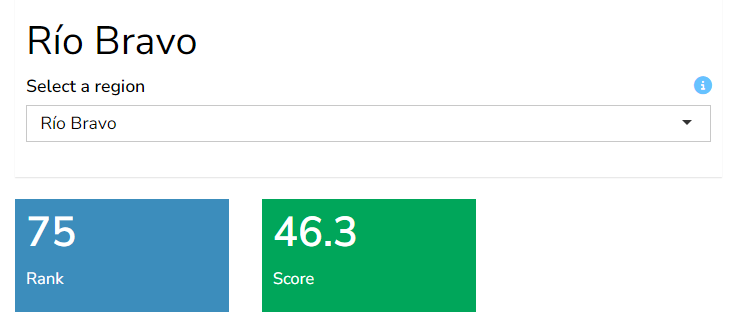
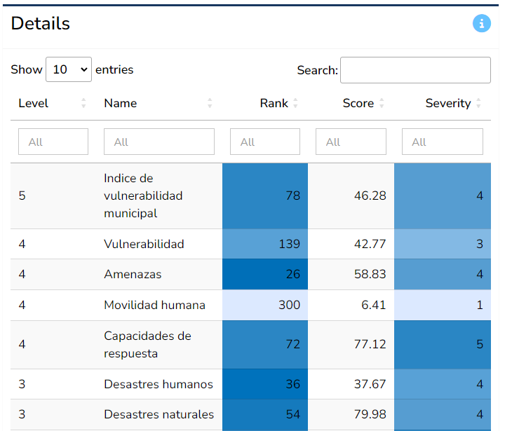
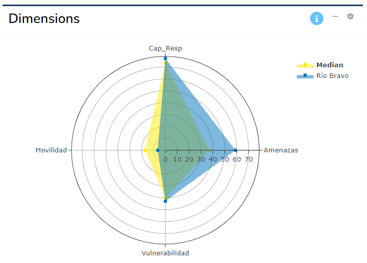
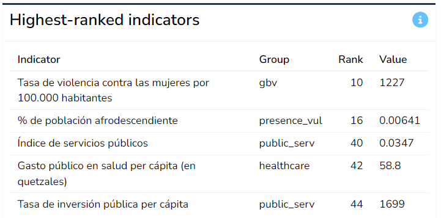

6 Region profiles
The composite indicator created by the A2SIT app, like any model, relies on a number of methodological assumptions. Therefore the index should be used as a complementary measure to the underlying data, rather than substituting it. If a region has a high score, it is important to understand why, and this is done by going back to the indicators.
The Profiles tab does exactly this - it generates detailed profiles of any region. Begin by selecting any region either using the dropdown in the top left of the main window, or by clicking on the “Go to profile” link on the map in the previous tab. This will display the overall rank and score of the region, plus other information.

6.1 Details table
The Details table gives full details of all aggregate and indicator scores for the selected region. The columns of the table are colour-formatted to help spot higher values at a glance.

The table can easily be sorted by clicking on the table headers - for example to see which indicators score or rank the highest. It can also be filtered by using the boxes under the table headers, for example filtering only to view indicators (level 1). The Search box allows to filter to specific indicators of interest by entering text there.
Recall that all data and results can also be downloaded as an Excel spreadsheet, and this is probably the best way to explore the results in fine detail. This is explained in Chapter 2.
6.2 Dimensions
The Dimensions box aims to show at a glance the scores or indicator values of the selected region, for any selected group.

By default, the app will show the scores of the region for the aggregates immediately below the index level. Where possible, group scores will be plotted on a radar chart (as shown above), unless the number of aggregates in the group is less than three - in this case, it is not possible to plot a meaningful radar chart, and a table will be displayed.
To change which group to show, click the “gear” icon in the top right of the box, and select the group to display using the dropdown. Here you can also toggle between a table and a radar chart (the latter only where possible, as mentioned above).
6.3 Highest/lowest ranks
The last two boxes on this tab show the highest and lowest ranked indicators as tables.

These tables are composed by searching across all indicators and displaying those with the five highest and lowest ranks across all regions. This can help to point to specific indicators that are driving high or low scores at the index level.